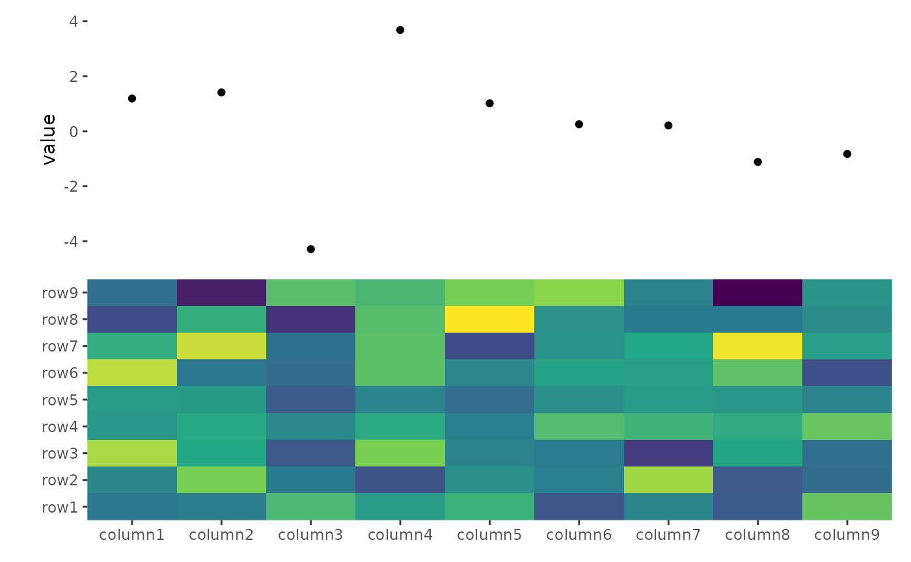
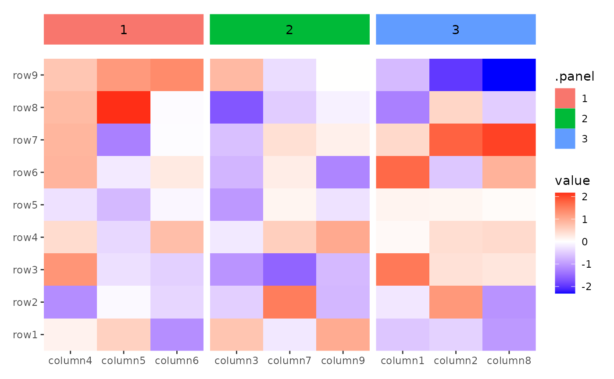
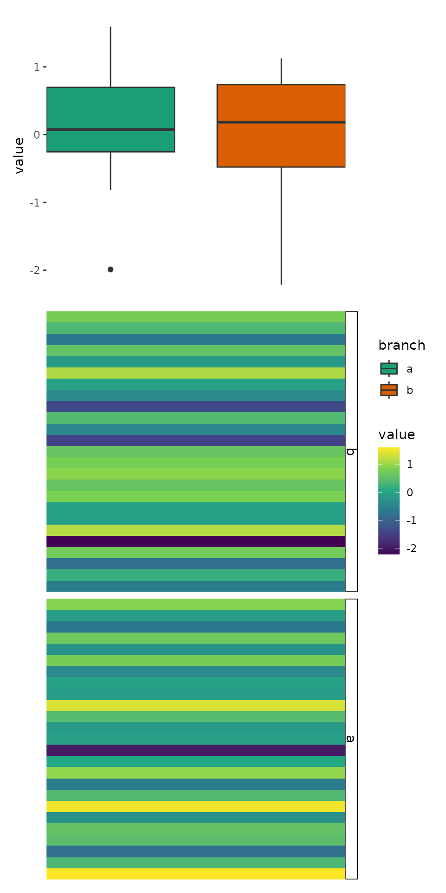
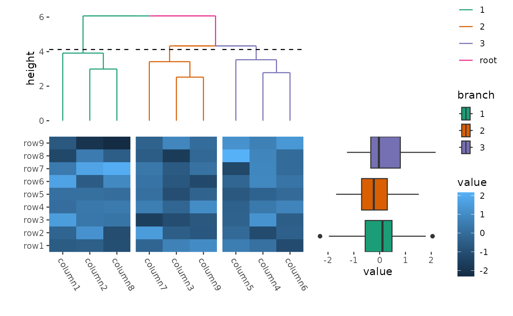
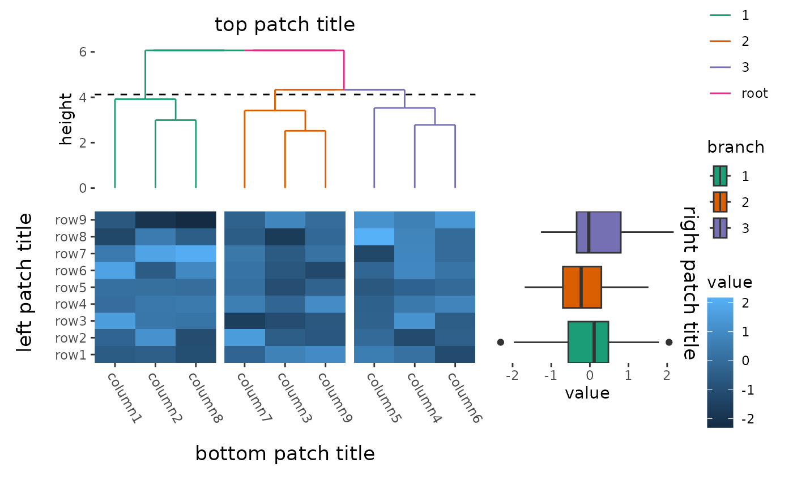
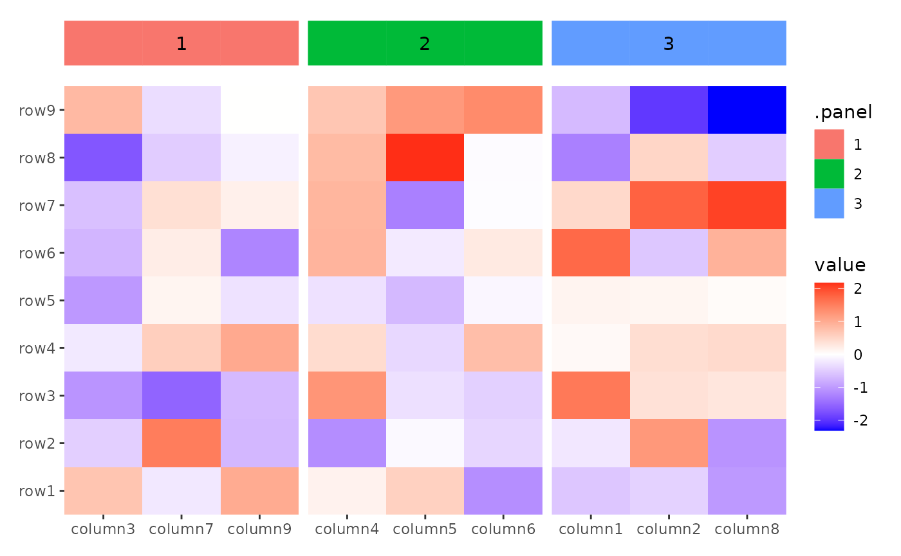

The ggalign package offers several align_*
functions that allow you to precisely control plot layout and integrate
additional plots. Currently, there are two primary align_*
functions for adding plots:
-
align_gg()/ggalign(): Create ggplot object with a customized data. -
align_panel()/ggpanel(): Create ggplot object with the layout panel data.
set.seed(123)
small_mat <- matrix(rnorm(81), nrow = 9)
rownames(small_mat) <- paste0("row", seq_len(nrow(small_mat)))
colnames(small_mat) <- paste0("column", seq_len(ncol(small_mat)))
align_gg
align_gg() is similar to ggplot in that it
initializes a ggplot data and mapping. Same
with other align_* functions. align_gg()
allowing you to provide data in various formats, including matrices,
data frames, or simple vectors. This data can be also inherited from the
layout.
align_gg() always applies a default mapping for the axis
of the data index in the layout. This mapping is
aes(y = .data$.y) for horizontal stacking (including left
and right heatmap annotation) and aes(x = .data$.x) for
vertical stacking (including top and bottom heatmap annotation). For
more information, refer to the “ggplot2 Specification” section in the
align_gg() documentation.
You can also use the ggalign() function, which is an
alias for align_gg().
ggheatmap(small_mat) +
scale_fill_viridis_c(guide = "none") +
hmanno("t") +
ggalign(data = rowSums) +
geom_point(aes(y = value))
Plot data
align_gg()/ggalign() requires the specific
data format for its operations. If you need to transform or filter data
for individual geoms, you can use the data
argument within each geom. However, if you have multiple
geoms and want a consistent transformation applied across
all, you can utilize the plot_data argument in the
align_gg()/ggalign() function. This allows you
to transform the default data for all subsequent geoms.
ggheatmap(small_mat) +
scale_fill_viridis_c(guide = "none") +
hmanno("t") +
align_kmeans(3L) +
ggalign(plot_data = function(data) subset(data, .panel == 1L)) +
geom_bar(aes(y = value, fill = .row_names), stat = "identity")
Cross panel sumamry
When used in a heatmap layout, and the data is inherited from the
heatmap data, a special column .extra_panel will be added,
which is the panel information for column (left or right annotation) or
row (top or bottom annotation). This is useful if you want to create
summary plot using another axis panel. In such cases, it’s often
necessary to disable the automatic setting of limits
(limits = FALSE in align_gg()).
set.seed(1L)
v <- stats::rnorm(50L)
split <- sample(letters[1:2], 50L, replace = TRUE)
ggheatmap(v) +
scale_fill_viridis_c() +
theme(strip.text = element_text(), strip.background = element_rect()) +
hmanno("r") +
align_group(split) +
hmanno("t", size = 0.5) +
ggalign(limits = FALSE) +
geom_boxplot(aes(.extra_panel, value, fill = .extra_panel),
# here, we use `print()` to show the underlying data
data = function(data) {
print(head(data))
data
}
) +
scale_fill_brewer(palette = "Dark2", name = "branch")
#> .column_index .row_index value .extra_panel .panel .x
#> 1 1 1 -0.6264538 b 1 1
#> 2 2 1 0.1836433 b 1 1
#> 3 3 1 -0.8356286 b 1 1
#> 4 4 1 1.5952808 a 1 1
#> 5 5 1 0.3295078 a 1 1
#> 6 6 1 -0.8204684 a 1 1This approach replicates the functionality of ComplexHeatmap::anno_summary(), but is versatile enough to be used with any heatmap, not just single-column or single-row heatmaps.
ggheatmap(small_mat) +
theme(axis.text.x = element_text(angle = -60, hjust = 0)) +
hmanno("t") +
align_dendro(aes(color = branch), k = 3L) +
scale_color_brewer(palette = "Dark2") +
hmanno("r", size = 0.5) +
ggalign(limits = FALSE) +
geom_boxplot(aes(y = .extra_panel, x = value, fill = factor(.extra_panel))) +
scale_fill_brewer(palette = "Dark2", name = "branch")
Plot titles
ggplot2 only allow add titles in the top or add caption
in the bottom. The ggalign package extends this capability, allowing you
to place titles around any border of the plot using the
patch_titles() function.
ggheatmap(small_mat) +
patch_titles(left = "left patch title", bottom = "bottom patch title") +
theme(axis.text.x = element_text(angle = -60, hjust = 0)) +
hmanno("t") +
align_dendro(aes(color = branch), k = 3L) +
scale_color_brewer(palette = "Dark2") +
patch_titles(top = "top patch title") +
hmanno("r", size = 0.5) +
ggalign(limits = FALSE) +
geom_boxplot(aes(y = .extra_panel, x = value, fill = factor(.extra_panel))) +
scale_fill_brewer(palette = "Dark2", name = "branch") +
patch_titles(right = "right patch title")
align_panel
The align_panel() function is similar to align_gg(), but
it operates specifically with layout panel data, removing all axis
labels and ticks. The ggpanel() function is an alias for
align_panel().
The data in the underlying ggplot object contains
following columns:
-
.panel: the panel for current layout axis. -
.index: the index of the original layout data. -
.xor.y: thexorycoordinates
You can use align_panel() to integrate additional
elements, such as block annotation or customized panel title, into your
layout.
ggheatmap(small_mat) +
hmanno("t", size = unit(1, "cm")) +
align_kmeans(centers = 3L) +
ggpanel() +
geom_tile(aes(y = 1L, fill = .panel, color = .panel),
width = 1L, height = 1L
) +
geom_text(aes(y = 1L, label = .panel),
data = function(data) {
aggregate(.x ~ .panel, data, FUN = median)
}
)
Session information
sessionInfo()
#> R version 4.4.1 (2024-06-14)
#> Platform: x86_64-pc-linux-gnu
#> Running under: Ubuntu 22.04.5 LTS
#>
#> Matrix products: default
#> BLAS: /usr/lib/x86_64-linux-gnu/openblas-pthread/libblas.so.3
#> LAPACK: /usr/lib/x86_64-linux-gnu/openblas-pthread/libopenblasp-r0.3.20.so; LAPACK version 3.10.0
#>
#> locale:
#> [1] LC_CTYPE=C.UTF-8 LC_NUMERIC=C LC_TIME=C.UTF-8
#> [4] LC_COLLATE=C.UTF-8 LC_MONETARY=C.UTF-8 LC_MESSAGES=C.UTF-8
#> [7] LC_PAPER=C.UTF-8 LC_NAME=C LC_ADDRESS=C
#> [10] LC_TELEPHONE=C LC_MEASUREMENT=C.UTF-8 LC_IDENTIFICATION=C
#>
#> time zone: UTC
#> tzcode source: system (glibc)
#>
#> attached base packages:
#> [1] stats graphics grDevices utils datasets methods base
#>
#> other attached packages:
#> [1] ggalign_0.0.4 ggplot2_3.5.1
#>
#> loaded via a namespace (and not attached):
#> [1] gtable_0.3.5 jsonlite_1.8.9 highr_0.11 dplyr_1.1.4
#> [5] compiler_4.4.1 tidyselect_1.2.1 jquerylib_0.1.4 systemfonts_1.1.0
#> [9] scales_1.3.0 textshaping_0.4.0 yaml_2.3.10 fastmap_1.2.0
#> [13] R6_2.5.1 labeling_0.4.3 generics_0.1.3 knitr_1.48
#> [17] tibble_3.2.1 desc_1.4.3 munsell_0.5.1 RColorBrewer_1.1-3
#> [21] bslib_0.8.0 pillar_1.9.0 rlang_1.1.4 utf8_1.2.4
#> [25] cachem_1.1.0 xfun_0.48 fs_1.6.4 sass_0.4.9
#> [29] viridisLite_0.4.2 cli_3.6.3 pkgdown_2.1.1 withr_3.0.1
#> [33] magrittr_2.0.3 digest_0.6.37 grid_4.4.1 lifecycle_1.0.4
#> [37] vctrs_0.6.5 evaluate_1.0.1 glue_1.8.0 data.table_1.16.2
#> [41] farver_2.1.2 ragg_1.3.3 fansi_1.0.6 colorspace_2.1-1
#> [45] rmarkdown_2.28 tools_4.4.1 pkgconfig_2.0.3 htmltools_0.5.8.1